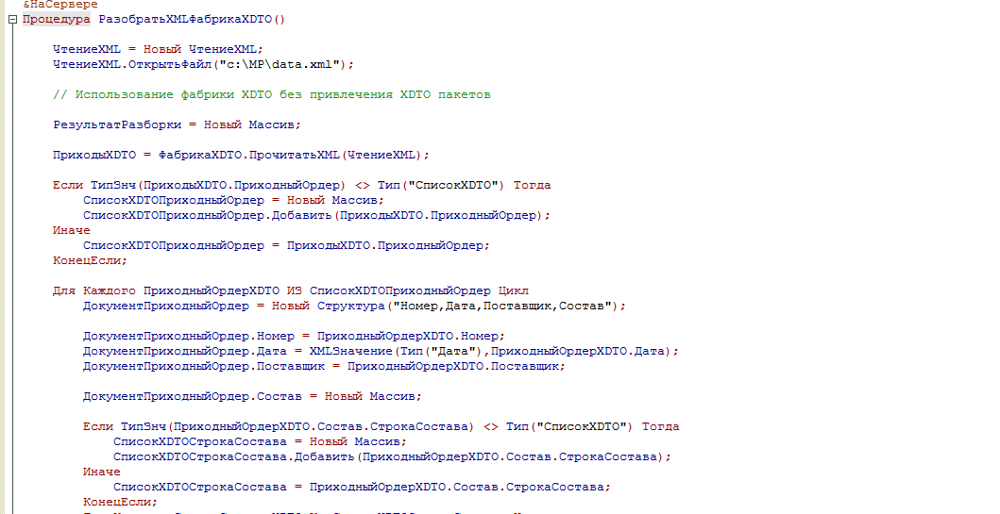

Разбор XML документа - почти все возможные способы
При обмене данными, как бы он не производился ( через файлы, через HTTP запросы или еще каким либо другим путем ) все равно основным форматом обмена является XML. В 1С существует несколько способов обработки XML документов – какой из них выбрать по критерию логической простоты и быстродействия? Для практической проверки различных методов был создан XML документ вида
Задачей всех проверяемых методов было получение из XML файла массива, состоящего из структур со свойствами Номер, Дата, Поставщик, Состав, причем свойство Состав само является массивом структур со свойствами Номенклатура и Количество.
Первый метод – простое последовательное чтение XML.
Текущее положение в XML документе отслеживается в переменной ТекущийПуть и при поступлении текстового узла на основании этой переменной заполняются (или игнорируются) соответствующие данные 1С. Конечно, не совсем корректно оценивать логическую сложность программы в строках исходного текста, но тем не менее это самый большой объем из всех методов - 64 строки. Что касается быстродействия (оно проверялось на компьютере памятью в 8 Гб и процессором Intel i7 2.2 Ггц, было создано два файла один на 10 тысяч записей объемом 10 мегабайт, другой на 100 тысяч и 100 мегабайт соответственно) , то на файле 10 000 записей полная обработка заняла 30 секунд и на файле в 100 мегабайт линейно увеличилась в 10 раз.
Второй метод – получение из XML файла документа DOM и последовательный перебор всех узлов полученного документа
Логически этот метод весьма незначительно проще прямого ЧтенияXML (57 строк кода против 62), а вот с быстродействие картина интересная: для файла в 10 тысяч записей быстродействие составило 12 секунд (быстрее более чем в два раза) , но для файла со 100 тысячами записей резко поднялась до 1000 секунд (медленнее более чем в три раза).
Третий метод подобен второму, но вместо последовательного перебора узлов применен отбор требуемых узлов в DOM документе с помощью выражений XPath .
Этот метод немного проще чем простой перебор узлов в DOM документе, но быстродействие … При 10 000 записей 69 секунд , а для 100 000 обработка длилась более часа, так и не завершилась, после чего была снята принудительно.
Очевидно метод с использованием DOM, в особенности при поиске узлов документа XPath выражениями, надо использовать только для небольших изменений DOM документа со сложной структурой узлов.
Все последующие методы используют для разбора XML документа фабрику XDTO.
Четвертый метод использует метод ПрочитатьXML глобальной ФабрикиXDTO. При этом тип получаемого объекта не указывается, его определяет сам метод фабрики. Тут есть маленькая тонкость – в случае, если тип получаемого объектаXDTO не указан, фабрика не всегда может самостоятельно определить что она получила одиночный объект или список из нескольких одинаковых объектов ( в нашем примере если ПриходныйОрдер в XML документе будет один фабрика посчитает что ПриходыXDTO.ПриходныйОрдер это одиночный объект а не список).

Данный метод не только заметно проще, чем все предыдущие, но и показывает отличное быстродействие на 10 000 записях 4,6 секунды, а при 100 000 обработка длится 46 секунд. Что показывает линейную зависимость от объема обрабатываемого файла.
Пятый метод схож с предыдущим, но глобальной фабрике XDTO подается на вход не только сам XML документ, но и его тип. Этот тип берется из ветки конфигурации XDTO-пакеты. (Если те кто передает вам XML данные хорошие люди, то они должны передать вам и XML схему данных – файл с расширением .xsd из которого вы и создаете в своей конфигурации XDTO-пакет – команда импорт XML схемы …, если нет требуемый пакет обычно не сложно создать вручную, анализируя переданные XML данные).
Один нюанс – частенько XML данные передают без указания URI пространства имен ( атрибут xmlns). Если это так, то необходимо самому добавить недостающий атрибут в XML данные, что и делают первые три оператора процедуры.
Метод замечательный, как по простоте создания, так и по быстродействию – 3,1 секунды на 10 000 записях.
И последний метод. Это скорее некоторая модификация пятого метода, но для условия, что не используется объект конфигурации XDTO-пакет, и фабрика XDTO создается на ходу из текстового описания XML схемы. (Примечание 1-Конечно можно загнать схему в текстовый макет, и оттуда уже использовать, но для учебной программы так нагляднее. 2-Текстовый вариант XML схемы можно например получить создав XDTO-пакет в любой конфигурации XDTO-пакет и выполнив команду Экспорт XML схемы..)
В прилагаемой конфигурации все методы разбора XML представлены в общей команде РазобратьXML, там же в другой общей команде СоздатьXML представлены средства для создания тестовых данных.